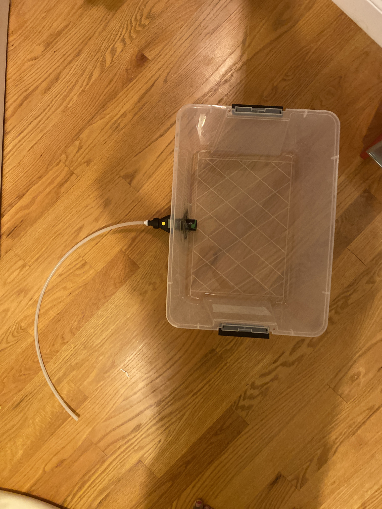
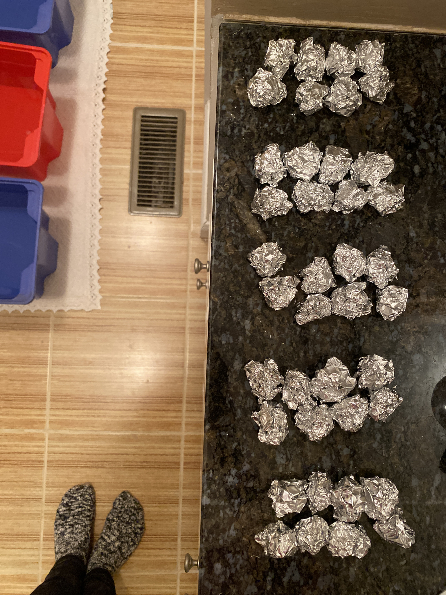
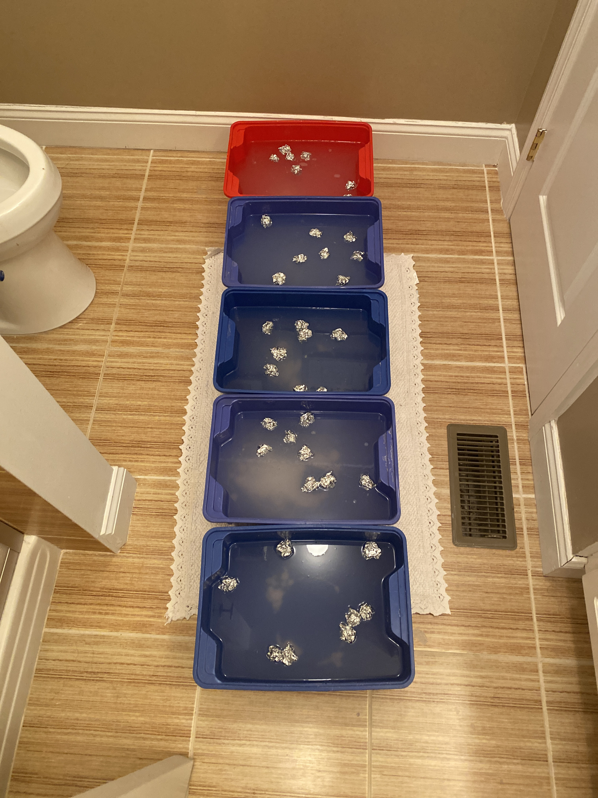
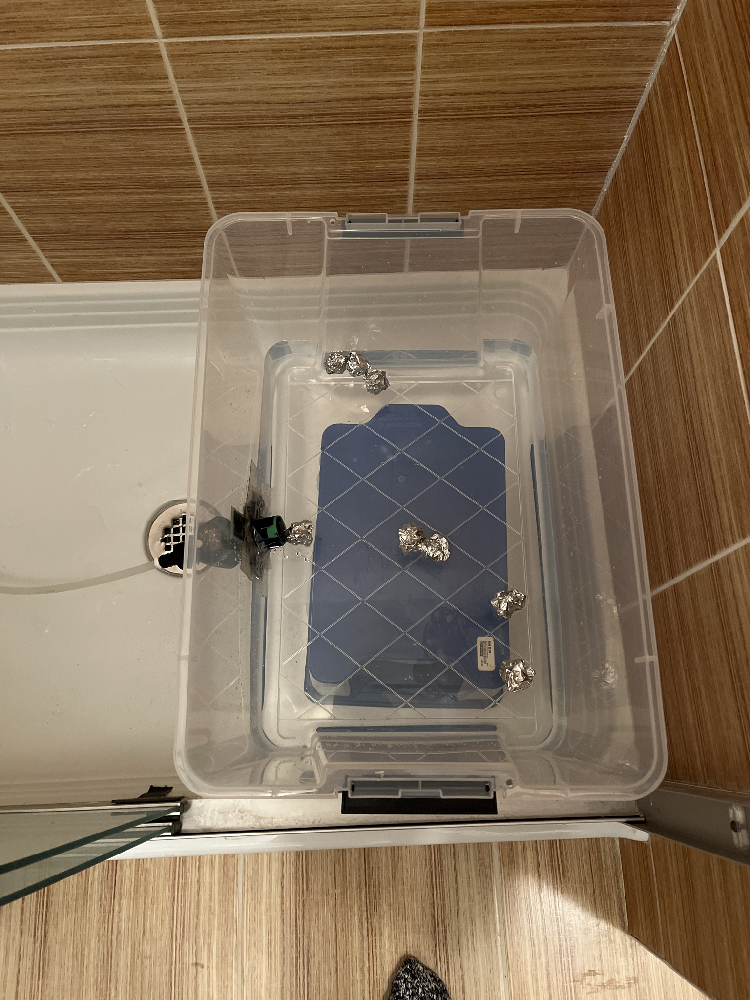
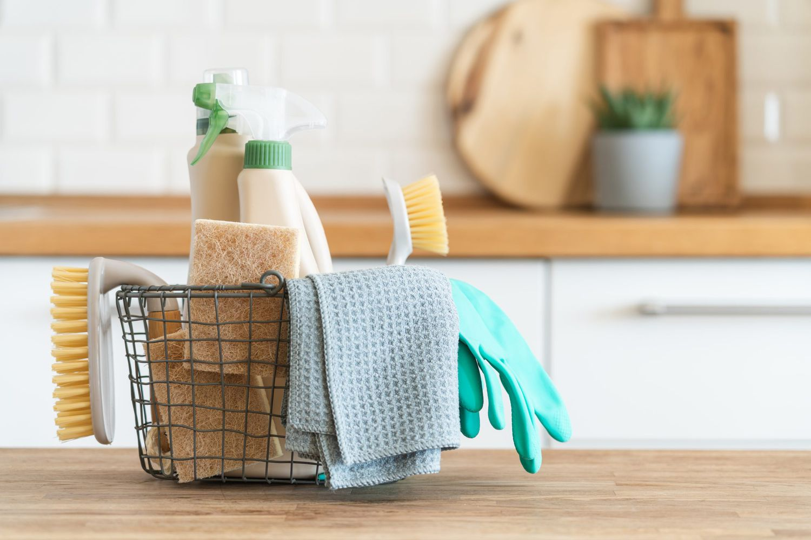

Procedure
Using a numbered list, describe your procedure w/ pictures
Step 1: Setup |
To set up the experiment, the power drill was used to cut a hole with a 1.5” diameter on one of the bigger sides of the tank, 2” above the bottom, and in the middle of each left and right edge. The meter was fitted in at the hole at the male NH Thread end, and secured with Gorilla Tape and Waterproof Tape on both sides. 33” of piping was put on the other end of the meter, and secured with the waterproof tape given with the flow meter. |
 |
|---|---|---|
Step 2: Make Solution |
To perform a trial for the experiment, 4 gallons of solution were needed in total and poured into the tank. This is what was needed for each pH level:
The water was checked with a pH tester and seen if it was the desired pH (either 1, 4, 7, 8, 10, or 12). |
 |
Step 3: Make Aluminum Balls |
Once the desired pH is reached, a 1’x18” sheet of aluminum was cut up into 4”x6.5” squares, rolled up, and put into the water as well. |
 |
Step 4: Let Solution Sit |
The tanks sat in a dark room for exactly 48 hours, away from any light or other factors. |
 |
Step 5: Flow Rate Testing |
After 48 hours, another storage unit was taken and placed under the tank. The water was poured into the tank, drained out of the tank through the piping and the flow meter, and out the end into a drain. When the reading on the flow meter stabilized, the flow measurement was recorded in L/m (liters per minute). |
 |
Step 6: Cleaning and Repeat |
Then, the whole tank was drained, and the equipment was cleaned with water and wet wipes. The water flushed the tank and the pipe out first, then the wet wipes were used to sanitize all surfaces, inside and out. Then the equipment was rinsed with water again. This experiment was performed 5 times for each condition. Then, one trial was done with each pH condition that had no aluminum in it. This was done to compare flow speed between conditions with and without aluminum. |
 |